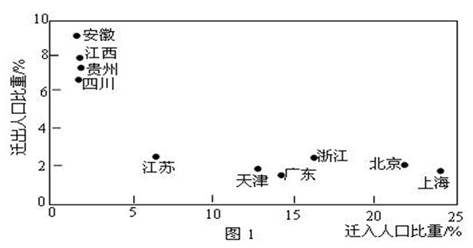
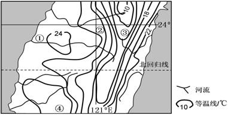
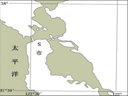
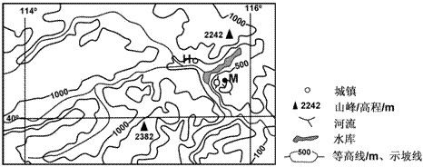
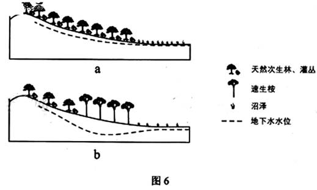
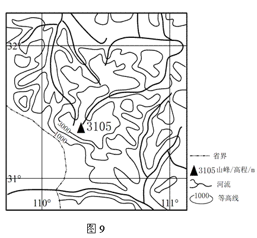
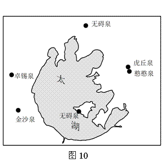

None - Fade - Slide - Convex - Concave - Zoom
选择班级
幻灯片样式
Black (default) -
White -
League -
Sky -
Beige -
Simple
Serif -
Blood -
Night -
Moon -
Solarized
图1表示我国部分省级行政区域2005-2010年间迁移人口比重。迁移人口以青壮年为主。读图1并结合相关知识，完成1-2题。
1、2005-2010年
A、迁出人口数量贵州多于四川
B、迁入人口数量上海多于广东
C、人口增长率浙江高于江苏
D、人口自然增长率安徽低于天津
【解析】本体主要考查对我国人口最多省份的了解以及对所给材料的正确领悟，浙江与江苏迁出人口比重相当，而迁入人口比重浙江明显高于江苏；广东、四川在我国人口最多省之列，均接近1亿，贵州和上海人口总数远少于四川和广东，迁出和迁入人口数分别少于四川和广东。
2、 2005-2010年，省级行政区城间的人口迁移
A、延缓了皖、赣、黔的老龄化进程
B、延缓了沪，京、津的老龄化进程
C、降低了皖、赣、黔的城市化水平
D、降低了沪、京、津的城市化水平
【解析】材料提示，迁移人口以青壮年为主（迁入和迁出均以青壮年为主），皖、赣、黔为经济欠发达地区，人口以（青壮年）迁出为主，所以会加速老龄化；沪、京、津属于我国发达地区，老龄化进程快，由图可知，上述三地2005-2010年为（青壮年）人口净迁入区，有助于延缓老龄化进程。
地膜覆盖具有保温、保湿、保土等作用，可有效提高农作物产量和农产品质量。我国目前使用的地膜多是超薄型地膜，易破，难回收，难以自然降解，造成严重的“白色污染”据此完成3-5题。
3、我国大部分地区使用地膜覆盖主要在于
A、春季
B、夏季
C、秋季
D、冬季
【解析】地膜使用在作物播种期，所以我国大部分地区使用地膜覆盖主要在于春季。
4、下列地区相比较，地膜覆盖的保湿、保温、保土作用最显著的是
A、东南沿海地区
B、西南地区
C、东北地区
D、西北地区
【解析】选择四个区域中相对最干燥且温度偏低（纬度偏高）、土壤水肥容易流失的地区，综合考虑，毫无疑问最佳选择是西北地区。
5、残留在土壤中的地膜会 ①危害作物根系发育 ②阻碍土壤温度提升 ③阻碍土壤水肥运移 ④加快表土流失速度
A、①③
B、①④
C、②③
D、②④
【解析】地膜会造成白色污染，危害作物根系，具有“保温、保湿、保土”作用，会阻碍土壤水分运移；有利于土壤温度提升、水分保持。
图2示意某地区年均温的分布，读图2，完成6-8题
6、影响该地区年均温分布特征的主要因素是
A、台风
B、海陆分布
C、地形
D、大气环流
【解析】中部偏东等温线分布密集且呈闭合状，位于台湾山脉，所以影响该地区年均温分布特征的主要因素是地形。
7、图示①②③④四地中，年降水量最低的是
A、①地
B、②地
C、③地
D、④地
【解析】①地地势平坦，位于台湾山脉夏季风的背风坡，年降水量相对最少；
8、樟树是亚热带常绿阔叶林优势树种。图示①②③④四地中，可能有樟树集中分布的是
A、①地
B、②地
C、③地
D、④地
【解析】樟树适宜分布在海拔较低、坡度较缓、光照条件好的山坡、谷地。
雾是近地面大气层中出现大量微小水滴而形成的一种天气现象。当暖湿空气经过寒冷的下垫面时，就易形成雾。图3中，S市附近海域夏季多雾，并影响S市。据此完成9—11题。
9、S市附近海域夏季多雾的主要原因是
A、沿岸暖流提供了充足的暖湿空气
B、半岛东侧海湾海水温度较低
C、海陆间气温差异较大
D、沿岸寒流的降温作用较强
【解析】加利福尼亚寒流经过中低纬加利福尼亚附近温暖海面时,温度降低,水汽凝结而形成海雾。
10、S市夏季常被雾笼罩，是因为
A、降水较少
B、气温较高
C、风力较弱
D、光照较强
【解析】风力大有利于雾的消散，地中海气候区夏季受副热带高压控制，风力较小；冬季受盛行西风控制，风力较大。
11、夏季，S市主要受
A、季风影响
B、西风带影响
C、低压控制
D、高压控制
【解析】S市（旧金山）为地中海气候，夏季主要受副热带高压控制。
36. （22分）阅读图文材料，完成下列要求。
在湿润和半湿润地区的湖畔、河边和海滨，偶见规模较小的沙丘群，其形成的主要条件为所在地区沙源丰畜、多风、植被稀疏。图5所示区城中，M处发育了规模较小的沙丘群;H县城附近是著名的风口，冬春季节风力尤为强劲;河流发源于黄土高原地区。
（1）分析M处附近沙源较丰富的原因。(6分)
（1）(M处附近的)河流从黄土高原携带大量泥沙，在河边、河床沉积；（3分） （河水水位季节变化大，）枯水季节河床裸露；（2分） 风沙在此沉积。（1分）
（2）分析H县城附近冬春季节风力强劲的原因(8分)
（2）冬春季节盛行西北季风（偏北风）；（2分） 河谷延伸方向与盛行风向基本一致；（3分） H县城附近为河谷交汇之地。（形成风口，导致狭管效应）。（3分）
（3）某课外活动小组的同学对M处的沙丘群规模是否会扩大产生了争论，形成了两种不同的观点。选择你支持的一种观点，为其提供论据。(8分) 观点A：M处沙丘群规模会扩大。 观点B：M处沙丘群规模不会扩大。
观点A：（M处沙丘群规模会扩大）。 论据：该区域西临黄土高原，北临内蒙古高原，大风可将沙尘吹到此处；（2分） 河流持续搬运泥沙：（2分） 人类活动用水量增加，导致河床裸露期增长：（2分） 风出风口后，在M地速度降低，风沙在此沉积。（2分）
观点B：（M处沙丘群规模不会扩大）。 论据：位于半湿润区，降水较丰富，风沙发生季节短（主要发生在冬春季节）：（2分） 河流源地及流经地区植树造林保持水土（使河流搬运的泥沙量减少）；（2分） 沙源集中分布在河床与河边，面积较小，不足以形成面积较大的沙丘群；（2分）位于山区，附近有水库；沙丘群难以向周围扩展。（2分） （每名考生选择一种观点做答，所提供的论据应支持所选择的观点，否则不得分，若两种观点都提供了论据，以所答的第一种观点评分。）
37.（24分）阅读图文材料，完成下列要求。
原产澳大利亚东北部热带雨林中的几种高大桉树，主根深扎地下，能大量吸收地下水。这几种桉树适应性强，生长迅速，3-5年即可成材，统称“速生桉”，我国西南地区某地引种速生桉作为造纸原料。图6中a、b分别示意该地速生桉种植前、后的变化。
（1）读图6a，分析当地沼泽获得稳定水源的原因及过程。(6分)
（1）原因：山坡上的天然次生林和灌木丛能涵养水源。（2分） 过程：藏留大气降水，减缓地表径流，增加雨水下渗，（在山地形成水分蓄积地带，）（通过地表径流和地下水）为沼泽提供稳定的水源。（4分）
（2）读图6b，分析种植速生桉后当地其他植被的变化及原因。（8分）
（2）植被变化 天然次生林和灌木丛退化；（2分） 沼泽萎缩。（2分） 原因：速生桉大量消耗地下水， 地下水位下降。（4分）
（3）简述我国西南地区引种速生桉发展造纸业的理由。(6分)
（3）速生桉适应性强，成材快，是良好的造纸原料。（3分） 发展造纸业能增加就业，创造产值，带动相关产业发展。（3分）
（4）就降水条件简述我国西南地区不适宜大面积种植速生桉的原因。(4分)
（我国西南地区属亚热带、热带季风气候，）年降水量低于热带雨林区；（2分） （有旱、雨两季之分，）旱季时间较长，降水较少。（2分）
神农架位于湖北省西北部，是我国著名的旅游景区，该地夏宜避暑，冬可滑雪，吸引了大量游客。图9示意神龙架及其周边地形，图中山峰为神农架主峰神农顶。
说明神农架夏季、冬季均吸引游客的自然原因。（10分）
神农架地处亚热带，(2分) 山地海拔较高，(2分) 植被繁茂，(2分) 夏季凉爽，(2分) 冬季有积雪。(2分)
43，（10分）自然灾害与防治
经过长期的农业生产实践，我国各地不同农作物的播种、收获等的时间相对固定，否则会影响农作物的产量和质量。2013午4月，东北地区特续低温.大田春播时间普遍比常年推迟7～10天。
分析4月份持续低温对东北地区农作物产量和质量的影响。（10分）
东北（农作物春播秋收，一年一熟，）适宜农作物生长的时间较短。(2分) 春播推迟7～10天，即农作物生长期缩短了7～10天；(3分) 错过适宜的播种期，扰乱了农作物正常的生长节律。(3分) 所以，农作物的产量会减少，质量会降低。(2分)
44、（10分）环境保护
图10示意环太湖地区六大名泉分布。历史上六大名泉都以水质化而著称。周围山区是这些名来的水源补给区。近年来，泉水受到污染，部分污染物指标超出国家饮用水标准。
说明环太湖地区六大名泉泉水污染造成的危害和难以治理的原因。（10分）
危害：泉水（地下水）是重要的饮用水源，人饮用受污染的泉水会危害身体健康；(2分) 引用泉水（地下水）灌溉，会污染土壤，导致农产品质量下降（污染物会超标）。(2分) 原因：泉水（地下水）（更新速度慢，）自然净化周期长；(2分) （深埋地下，）人工净化困难；(2分) 涉及地区广，需区域联动共同治理。(2分)